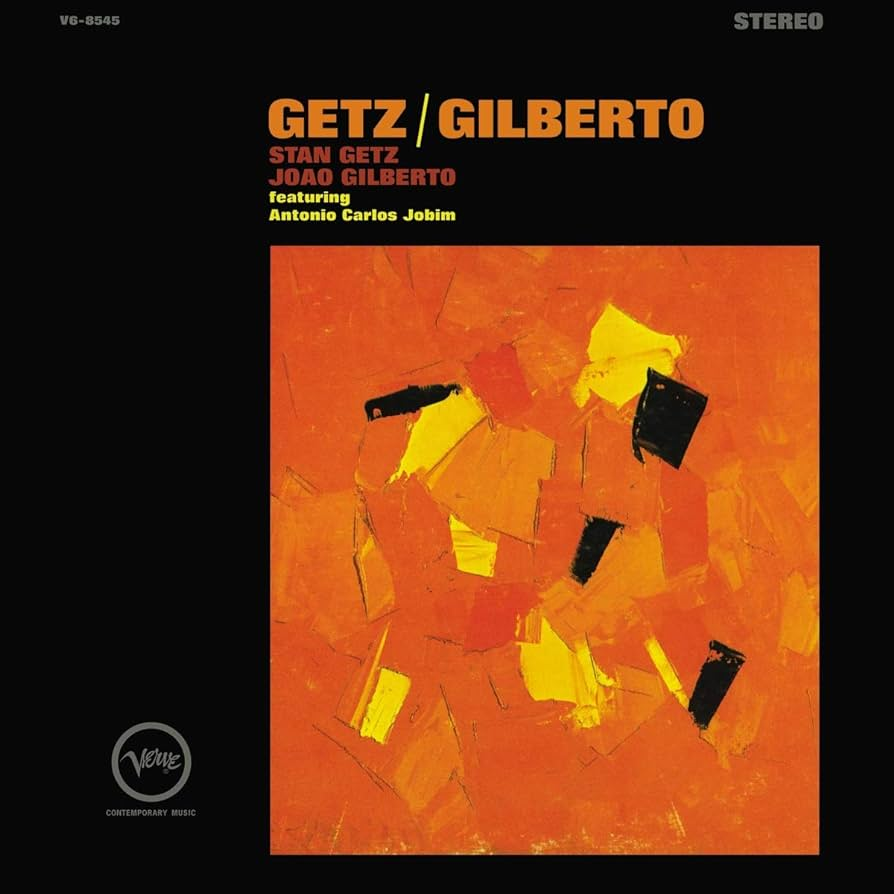

Disco: A Love Supreme
De John Coltranem año, 1965
Ficha tecnica
Título del Álbum: A Love Supreme
Artista: John Coltrane
Fecha de Lanzamiento: Enero de 1965
Género: Jazz, post-bop, jazz modal
Duración: Aproximadamente 33 minutos
Discográfica: Impulse! Records
Producción: John Coltrane y Bob Thiele

Disco: Bitches Brew
De Miles Davis, año 1970
Ficha tecnica
Título del Álbum: Bitches Brew
Artista: Miles Davis
Fecha de Lanzamiento: 30 de marzo de 1970
Género: Jazz, jazz fusión
Duración: Aproximadamente 94 minutos
Discográfica: Columbia Records
Producción: Miles Davis y Teo Macero

Disco: Getz/Gilberto
De João Gilberto, año 1964
Ficha tecnica
Título del Álbum: Getz/Gilberto
Artistas Principales:
Stan Getz: Saxofón tenor
João Gilberto: Voz y guitarra
Astrud Gilberto: Voz
Antônio Carlos Jobim: Piano y composición
Fecha de Lanzamiento: Marzo de 1964
Género: Bossa nova, jazz, samba
Duración: Aproximadamente 34 minutos
Discográfica: Verve Records
Producción: Creed Taylor

Disco: Giant Steps
De John Coltrane, año 1960
Ficha tecnica
Título del Álbum: Giant Steps
Artista: John Coltrane
Fecha de Lanzamiento: Enero de 1960
Género: Jazz, post-bop
Duración: Aproximadamente 37 minutos
Discográfica: Atlantic Records
Producción: Nesuhi Ertegün